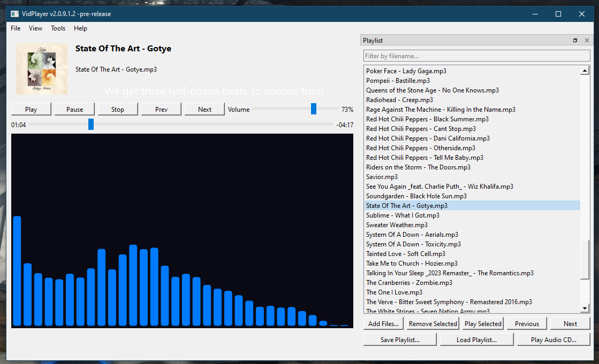
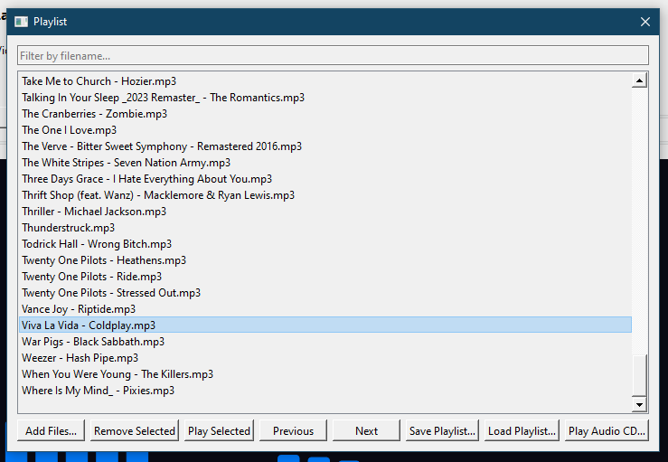
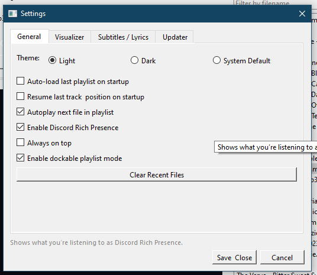
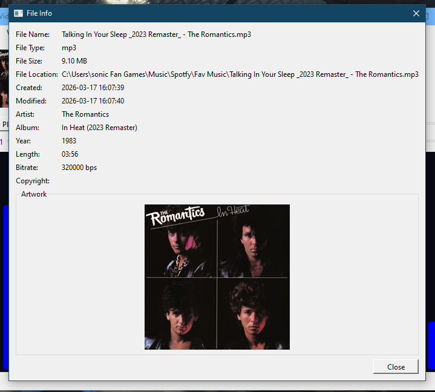
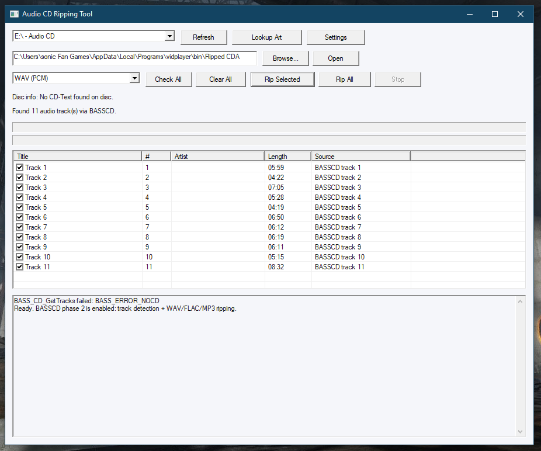

VidPlayer Screenshots
The screenshots currently stored with this website mostly show the later Python/PySide6 edition and the earlier Win32 ripper interface. They remain here for visual history. New C# rebuild screenshots can be added without removing the older gallery.
Modern Python Edition Gallery





C# Rebuild Screenshots
A future website asset update can add current images of the C# main player, updater, VPTheme Editor, Theme Environment Tester, and VPACDRipper. The current build and source are available now.